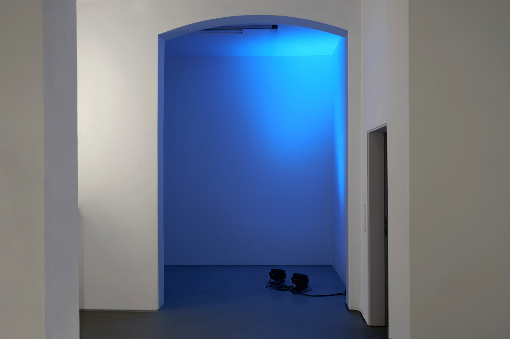

Orange, Blue!, 2022
Led installation
Variable dimensions
Exhibition view, DISKURS Berlin
The work Orange, blue! first referred to the color spectrum of Earth's sunset and that on Mars. While we experience warmtoned dusk on Earth, that on Mars is blue due to the atmospheric components of the planet. Interestingly, these light spectra influence the rhythm of biological beings: blue frequencies like those of the sun in broad daylight stimate us, while this effect is reduced with warm frequencies. We therefore use orange filters in order to reduce the blue light from screens and devices, allowing us both to continue our activities without disrupting the circadian rhythm. Also, a cooler neon color will keep employees awake and allow for extended night shifts. The light installation oscillates between blue and orange in slow transitions to white.

Photo credits: Jaewon Kim


Photo credits: Tim Albrecht
Approaching the Unknown, group exhibition views, Galerie der HFBK, Hamburg
See the exhibition's documentation: https://kubaparis.com/submission/243628
DMX programming: thanks to Guillaume Arseneault for technical support
This work is supported by the New Brunswick Arts Board